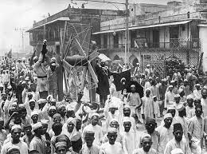

India's History
India's history is incredibly vast and encompasses thousands of years of civilization and cultural development. Here is a brief overview of India's history:
1. Ancient Civilizations: The earliest known civilization in India is the Indus Valley Civilization, which thrived around 2500 BCE. It had well-planned cities like Harappa and Mohenjo-Daro. The civilization's writing system has not been fully deciphered. The Vedic period followed, characterized by the composition of sacred texts known as the Vedas.
2. Maurya Empire: The Maurya Empire, founded by Chandragupta Maurya in the 4th century BCE, was one of the first major empires in India. Under the rule of Emperor Ashoka, it expanded to encompass most of the Indian subcontinent and became known for its administrative and military achievements.
3. Gupta Empire: The Gupta Empire, lasting from the 4th to 6th centuries CE, is often considered the "Golden Age" of India. It was known for its advancements in arts, science, mathematics, and literature, with notable scholars like Aryabhata and Kalidasa.

4. Islamic Sultanates and Mughal Empire: Beginning in the 12th century CE, various Islamic sultanates, such as the Delhi Sultanate, ruled over parts of India. The Mughal Empire, founded by Babur in the 16th century, witnessed significant cultural and architectural achievements under emperors like Akbar, Jahangir, and Shah Jahan. The Taj Mahal is a famous example of Mughal architecture.
5. British Colonial Rule: The British East India Company established a foothold in India in the 17th century and gradually gained control over the subcontinent. The British Raj, beginning in 1858, marked direct British colonial rule, which lasted until India's independence in 1947. This period saw the emergence of the Indian independence movement, led by figures like Mahatma Gandhi and Jawaharlal Nehru.
6. Independence and Partition: India gained independence from British rule on August 15, 1947. However, the subcontinent was also partitioned, leading to the creation of the separate nations of India and Pakistan. This resulted in widespread violence and mass migrations, with Hindus and Sikhs moving to India and Muslims to Pakistan.

7. Post-Independence India: Since independence, India has followed a democratic system of governance and has made significant strides in various fields. It has faced challenges like poverty, population growth, and regional tensions, but has also achieved notable progress in areas such as agriculture, industry, education, science and technology, and space exploration.